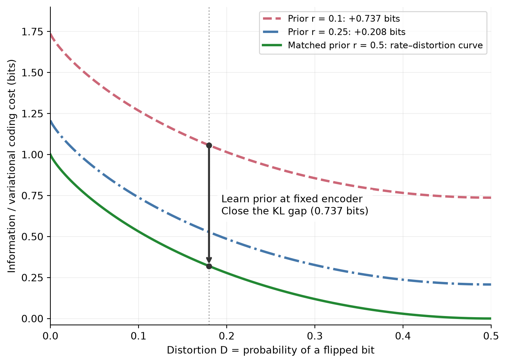

Rate–distortion and prior mismatch
An exact binary example of the extra coding cost of an inaccurate latent prior.
The idea: learning a latent prior can lower the variational coding cost toward the rate–distortion curve without changing what an encoder retains. This example makes the prior-mismatch term in the aesthetics model visible.
A binary example
Let \(X\) be a fair binary stimulus and \(Z\) a binary latent. Use the latent itself as the reconstruction, with Hamming distortion \(d(x,z)=\mathbf 1[x\ne z]\). An encoder \(F_D\) flips the input with probability \(D\), so its expected distortion is \(D\). For \(0\le D\le 1/2\), these channels attain the rate–distortion curve:
\[ \mathcal R(D)=1-h_2(D),\qquad h_2(D)=-D\log_2D-(1-D)\log_2(1-D). \]
Here \(0\log_2 0=0\). We use \(\mathcal R(D)\) for the rate–distortion function to distinguish it from the learned prior \(R_\theta\).
The true latent marginal is \(q_{F_D}(Z=1)=1/2\) for every encoder in this family. Write the prior as \(R_r(Z=1)=r\). The variational rate identity (Alemi et al. 2018) gives:
\[ \mathcal C(F_D,r)=\mathcal R(D) +D_{\mathrm{KL}}\!\left(\operatorname{Bern}(1/2)\Vert\operatorname{Bern}(r)\right) =1-h_2(D)-\tfrac12\log_2\!\bigl(4r(1-r)\bigr). \]
How to read it
- Along a curve: change the encoder’s flip probability, trading retained information for distortion.
- Downward at a fixed distortion: improve only the prior. The latent marginal remains fair; \(r\) approaches \(1/2\), and the mismatch penalty disappears. The encoder and its mutual information do not change.
- At \(D=1/2\): the latent carries no input information, yet a mismatched prior still gives positive expected KL. Positive variational rate alone does not prove informative representations.
The constant vertical offsets are a property of this symmetric example, where the marginal is the same at every distortion. They need not be constant for other encoder families.
NoteWhen is the gap entirely prior mismatch?
Only when the encoder attains the rate–distortion frontier, as it does here. For a general feasible encoder and a specified reconstruction rule with achieved distortion \(D_F\),
\[ \mathcal C(F,\theta)-\mathcal R(D_F) =\underbrace{I_F(X;Z)-\mathcal R(D_F)}_{\text{encoder's excess rate}} +\underbrace{D_{\mathrm{KL}}(q_F\Vert R_\theta)}_{\text{prior mismatch}}. \]
Learning the prior removes the second term, not necessarily the first. This illustrative binary coding problem is not an empirical result about perception or aesthetic reward.
References
Alemi, Alexander, Ben Poole, Ian Fischer, Joshua Dillon, Rif A. Saurous, and Kevin Murphy. 2018. “Fixing a Broken ELBO.” Proceedings of the 35th International Conference on Machine Learning, July, 159–68. https://proceedings.mlr.press/v80/alemi18a.html.